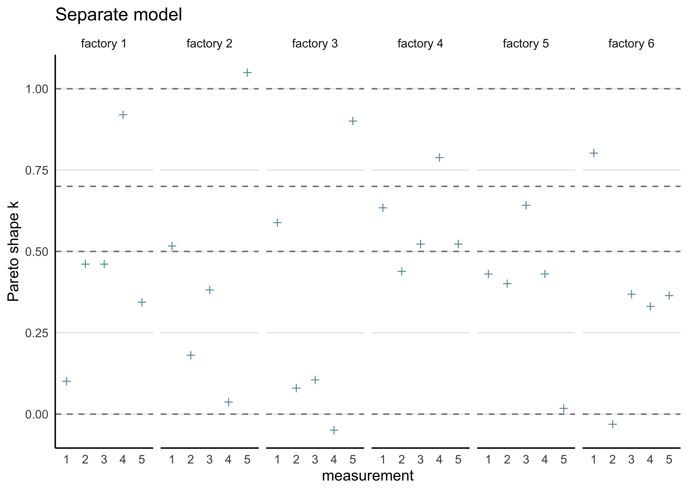

27 Assignment 8
2021-11-12
27.1 Setup
knitr::opts_chunk$set(echo = TRUE, comment = "#>", dpi = 300)
for (f in list.files(here::here("src"), pattern = "R$", full.names = TRUE)) {
source(f)
}
library(rstan)
library(bayestestR)
library(loo)
library(tidybayes)
library(tidyverse)
rstan_options(auto_write = TRUE)
options(mc.cores = 2)
theme_set(theme_classic() + theme(strip.background = element_blank()))
factory <- aaltobda::factory
set.seed(678)27.2 Exercise 1. Model assessment: LOO-CV for factory data with Stan
Use leave-one-out cross-validation (LOO-CV) to assess the predictive performance of the pooled, separate and hierarchical Gaussian models for the factory dataset (see the second exercise in Assignment 7).
a) Fit the models with Stan as instructed in Assignment 7.
To use the loo or psisloo functions, you need to compute the log-likelihood values of each observation for every posterior draw (i.e. an \(S\)-by-\(N\) matrix, where \(S\) is the number of posterior draws and \(N = 30\) is the total number of observations).
This can be done in the generated quantities block in the Stan code; for a demonstration, see the Gaussian linear model lin.stan in the R Stan examples that can be found here.
Separate model
separate_model_code <- here::here(
"models", "assignment07_factories_separate.stan"
)
separate_model_data <- list(
y = factory,
N = nrow(factory),
J = ncol(factory)
)
separate_model <- rstan::stan(
separate_model_code,
data = separate_model_data,
verbose = FALSE,
refresh = 0
)
print(separate_model, pars = c("mu", "sigma"))#> Inference for Stan model: assignment07_factories_separate.
#> 4 chains, each with iter=2000; warmup=1000; thin=1;
#> post-warmup draws per chain=1000, total post-warmup draws=4000.
#>
#> mean se_mean sd 2.5% 25% 50% 75% 97.5% n_eff Rhat
#> mu[1] 85.74 0.13 7.30 72.77 80.60 85.40 90.50 101.41 2985 1
#> mu[2] 105.07 0.07 4.40 96.26 102.25 105.16 107.86 113.48 3528 1
#> mu[3] 90.40 0.08 4.62 81.81 87.40 90.12 93.23 100.44 3546 1
#> mu[4] 110.56 0.06 3.12 104.01 108.86 110.67 112.45 116.16 2523 1
#> mu[5] 91.46 0.06 3.90 84.00 89.00 91.29 93.83 99.79 3928 1
#> mu[6] 91.25 0.11 6.31 79.88 87.09 90.80 94.99 104.94 3392 1
#> sigma[1] 19.28 0.14 6.92 10.51 14.54 17.85 22.36 36.47 2495 1
#> sigma[2] 10.41 0.06 3.32 6.14 8.14 9.78 11.92 18.78 2971 1
#> sigma[3] 11.42 0.07 3.76 6.62 8.86 10.57 13.13 20.71 2825 1
#> sigma[4] 6.85 0.06 2.47 3.90 5.26 6.37 7.82 12.71 1640 1
#> [ reached getOption("max.print") -- omitted 2 rows ]
#>
#> Samples were drawn using NUTS(diag_e) at Tue Feb 8 07:07:25 2022.
#> For each parameter, n_eff is a crude measure of effective sample size,
#> and Rhat is the potential scale reduction factor on split chains (at
#> convergence, Rhat=1).Pooled model
pooled_model_code <- here::here("models", "assignment07_factories_pooled.stan")
pooled_model_data <- list(
y = unname(unlist(factory)),
N = length(unlist(factory))
)
pooled_model <- rstan::stan(
pooled_model_code,
data = pooled_model_data,
verbose = FALSE,
refresh = 0
)
print(pooled_model, pars = c("mu", "sigma"))#> Inference for Stan model: assignment07_factories_pooled.
#> 4 chains, each with iter=2000; warmup=1000; thin=1;
#> post-warmup draws per chain=1000, total post-warmup draws=4000.
#>
#> mean se_mean sd 2.5% 25% 50% 75% 97.5% n_eff Rhat
#> mu 93.64 0.06 3.15 87.50 91.56 93.62 95.67 99.94 2906 1
#> sigma 17.74 0.04 2.33 13.92 16.06 17.47 19.16 22.88 2707 1
#>
#> Samples were drawn using NUTS(diag_e) at Tue Feb 8 07:07:28 2022.
#> For each parameter, n_eff is a crude measure of effective sample size,
#> and Rhat is the potential scale reduction factor on split chains (at
#> convergence, Rhat=1).Hierarchical model
hierarchical_model_code <- here::here(
"models", "assignment07_factories_hierarchical.stan"
)
hierarchical_model_data <- list(
y = factory,
N = nrow(factory),
J = ncol(factory)
)
hierarchical_model <- rstan::stan(
hierarchical_model_code,
data = hierarchical_model_data,
verbose = FALSE,
refresh = 0
)#> Warning: There were 29 divergent transitions after warmup. See
#> http://mc-stan.org/misc/warnings.html#divergent-transitions-after-warmup
#> to find out why this is a problem and how to eliminate them.#> Warning: Examine the pairs() plot to diagnose sampling problemsprint(hierarchical_model, pars = c("alpha", "tau", "mu", "sigma"))#> Inference for Stan model: assignment07_factories_hierarchical.
#> 4 chains, each with iter=2000; warmup=1000; thin=1;
#> post-warmup draws per chain=1000, total post-warmup draws=4000.
#>
#> mean se_mean sd 2.5% 25% 50% 75% 97.5% n_eff Rhat
#> alpha 94.49 0.08 4.59 85.49 91.41 94.51 97.42 103.75 3438 1.00
#> tau 10.94 0.12 4.10 3.65 8.07 10.58 13.41 19.85 1222 1.01
#> mu[1] 81.63 0.17 6.34 69.57 77.30 81.40 85.80 94.85 1382 1.00
#> mu[2] 102.56 0.12 5.77 91.48 98.58 102.49 106.34 114.27 2445 1.00
#> mu[3] 89.79 0.10 5.57 78.62 86.16 89.88 93.51 100.59 3159 1.00
#> mu[4] 106.30 0.14 6.32 93.89 102.01 106.47 110.66 118.44 2004 1.00
#> mu[5] 91.32 0.09 5.38 80.68 87.73 91.38 94.88 101.74 3999 1.00
#> mu[6] 88.65 0.12 5.69 77.27 84.95 88.75 92.59 99.52 2244 1.00
#> sigma 14.34 0.05 2.19 10.78 12.78 14.07 15.58 19.52 1980 1.00
#>
#> Samples were drawn using NUTS(diag_e) at Tue Feb 8 07:07:30 2022.
#> For each parameter, n_eff is a crude measure of effective sample size,
#> and Rhat is the potential scale reduction factor on split chains (at
#> convergence, Rhat=1).b) Compute the PSIS-LOO elpd values and the \(\hat{k}\)-values for each of the three models. Hint! It will be convenient to visualize the \(\hat{k}\)-values for each model so that you can easily see how many of these values fall in the range \(\hat{k} > 0.7\) to assess the reliability of the PSIS-LOO estimate for each model. You can read more about the theoretical guarantees for the accuracy of the estimate depending on \(\hat{k}\) from the original article (see here or here), but regarding this assignment, it suffices to understand that if all the \(\hat{k}\)-values are \(\hat{k} \le 0.7\), the PSIS-LOO estimate can be considered to be reliable, otherwise there is a concern that it may be biased (too optimistic, overestimating the predictive accuracy of the model).
calc_loo <- function(mdl) {
log_lik <- loo::extract_log_lik(mdl, merge_chains = FALSE)
r_eff <- loo::relative_eff(exp(log_lik))
loo_res <- loo::loo(log_lik, r_eff = r_eff)
return(loo_res)
}Separate model
separate_loo <- calc_loo(separate_model)#> Warning: Some Pareto k diagnostic values are too high. See help('pareto-k-diagnostic') for details.print(separate_loo)#>
#> Computed from 4000 by 30 log-likelihood matrix
#>
#> Estimate SE
#> elpd_loo -131.7 7.1
#> p_loo 13.6 3.5
#> looic 263.5 14.2
#> ------
#> Monte Carlo SE of elpd_loo is NA.
#>
#> Pareto k diagnostic values:
#> Count Pct. Min. n_eff
#> (-Inf, 0.5] (good) 19 63.3% 1810
#> (0.5, 0.7] (ok) 6 20.0% 572
#> (0.7, 1] (bad) 4 13.3% 32
#> (1, Inf) (very bad) 1 3.3% 12
#> See help('pareto-k-diagnostic') for details.Pooled model
pooled_loo <- calc_loo(pooled_model)
print(pooled_loo)#>
#> Computed from 4000 by 30 log-likelihood matrix
#>
#> Estimate SE
#> elpd_loo -130.9 4.9
#> p_loo 2.1 0.9
#> looic 261.9 9.7
#> ------
#> Monte Carlo SE of elpd_loo is 0.0.
#>
#> All Pareto k estimates are good (k < 0.5).
#> See help('pareto-k-diagnostic') for details.Hierarchical model
hierarchical_loo <- calc_loo(hierarchical_model)#> Warning: Some Pareto k diagnostic values are slightly high. See help('pareto-k-diagnostic') for details.print(hierarchical_loo)#>
#> Computed from 4000 by 30 log-likelihood matrix
#>
#> Estimate SE
#> elpd_loo -127.0 5.1
#> p_loo 6.1 1.8
#> looic 254.0 10.1
#> ------
#> Monte Carlo SE of elpd_loo is 0.1.
#>
#> Pareto k diagnostic values:
#> Count Pct. Min. n_eff
#> (-Inf, 0.5] (good) 28 93.3% 1358
#> (0.5, 0.7] (ok) 2 6.7% 250
#> (0.7, 1] (bad) 0 0.0% <NA>
#> (1, Inf) (very bad) 0 0.0% <NA>
#>
#> All Pareto k estimates are ok (k < 0.7).
#> See help('pareto-k-diagnostic') for details.c) Compute the effective number of parameters $p_ for each of the three models. Hint! The estimated effective number of parameters in the model can be computed from equation (7.15) in the book, where elpdloo-cv is the PSIS-LOO value (sum of the LOO log densities) and lpd is given by equation (7.5) in the book.
extract_p_eff <- function(loo_res) {
loo_res$estimates[2, ]
}
bind_rows(
extract_p_eff(separate_loo),
extract_p_eff(pooled_loo),
extract_p_eff(hierarchical_loo)
) %>%
add_column(model = c("separate", "pooled", "hierarchical"))#> # A tibble: 3 × 3
#> Estimate SE model
#> <dbl> <dbl> <chr>
#> 1 13.6 3.47 separate
#> 2 2.13 0.892 pooled
#> 3 6.07 1.76 hierarchicald) Assess how reliable the PSIS-LOO estimates are for the three models based on the \(\hat{k}\)-values.
plot_khat <- function(loo_res, factory_data) {
khat <- as.data.frame(loo_res$pointwise)$influence_pareto_k
factory_data %>%
mutate(idx = row_number()) %>%
pivot_longer(-idx, names_to = "factory", values_to = "measure") %>%
arrange(factory) %>%
mutate(
khat = !!khat,
factory = str_replace(factory, "V", "factory ")
) %>%
ggplot(aes(x = factor(idx), y = khat)) +
facet_wrap(vars(factory), nrow = 1, scales = "free_x") +
geom_hline(yintercept = c(0, 0.5, 0.7, 1.0), linetype = 2, color = "grey50") +
geom_point(shape = 3, color = "#6497B1") +
theme(axis.ticks = element_blank(), panel.grid.major.y = element_line()) +
labs(x = "measurement", y = "Pareto shape k")
}plot_khat(separate_loo, factory) + labs(title = "Separate model")
plot_khat(pooled_loo, factory) + labs(title = "Pooled model")
plot_khat(hierarchical_loo, factory) + labs(title = "Hierarchical model")
e) An assessment of whether there are differences between the models with regard to the elpdloo-cv, and if so, which model should be selected according to PSIS-LOO.
extract_elpd <- function(loo_res) {
loo_res$estimates[1, ]
}bind_rows(
extract_elpd(separate_loo),
extract_elpd(pooled_loo),
extract_elpd(hierarchical_loo)
) %>%
add_column(model = c("separate", "pooled", "hierarchical"))#> # A tibble: 3 × 3
#> Estimate SE model
#> <dbl> <dbl> <chr>
#> 1 -132. 7.08 separate
#> 2 -131. 4.86 pooled
#> 3 -127. 5.05 hierarchicalFrom the ELPD and \(\hat{k}\) values, the hierarchical model is superior to the seaprate and pooled models.
f) Both the Stan and R code should be included in your report.
All of the R code is included in this file.
All of the models are described in Assignment 7.
Below is a list of the Stan code for all of the models (available in the models/ directory):
sessionInfo()#> R version 4.1.2 (2021-11-01)
#> Platform: x86_64-apple-darwin17.0 (64-bit)
#> Running under: macOS Big Sur 10.16
#>
#> Matrix products: default
#> BLAS: /Library/Frameworks/R.framework/Versions/4.1/Resources/lib/libRblas.0.dylib
#> LAPACK: /Library/Frameworks/R.framework/Versions/4.1/Resources/lib/libRlapack.dylib
#>
#> locale:
#> [1] en_US.UTF-8/en_US.UTF-8/en_US.UTF-8/C/en_US.UTF-8/en_US.UTF-8
#>
#> attached base packages:
#> [1] stats graphics grDevices datasets utils methods base
#>
#> other attached packages:
#> [1] forcats_0.5.1 stringr_1.4.0 dplyr_1.0.7
#> [4] purrr_0.3.4 readr_2.0.1 tidyr_1.1.3
#> [7] tibble_3.1.3 tidyverse_1.3.1 tidybayes_3.0.1
#> [10] loo_2.4.1 bayestestR_0.11.0 rstan_2.21.2
#> [13] ggplot2_3.3.5 StanHeaders_2.21.0-7
#>
#> loaded via a namespace (and not attached):
#> [1] fs_1.5.0 matrixStats_0.61.0 lubridate_1.7.10
#> [4] insight_0.14.4 httr_1.4.2 rprojroot_2.0.2
#> [7] tensorA_0.36.2 tools_4.1.2 backports_1.2.1
#> [10] bslib_0.2.5.1 utf8_1.2.2 R6_2.5.0
#> [13] DBI_1.1.1 colorspace_2.0-2 ggdist_3.0.0
#> [16] withr_2.4.2 tidyselect_1.1.1 gridExtra_2.3
#> [19] prettyunits_1.1.1 processx_3.5.2 curl_4.3.2
#> [22] compiler_4.1.2 rvest_1.0.1 cli_3.0.1
#> [25] arrayhelpers_1.1-0 xml2_1.3.2 labeling_0.4.2
#> [28] bookdown_0.24 posterior_1.1.0 sass_0.4.0
#> [31] scales_1.1.1 checkmate_2.0.0 aaltobda_0.3.1
#> [34] callr_3.7.0 digest_0.6.27 rmarkdown_2.10
#> [37] pkgconfig_2.0.3 htmltools_0.5.1.1 highr_0.9
#> [40] dbplyr_2.1.1 rlang_0.4.11 readxl_1.3.1
#> [43] rstudioapi_0.13 jquerylib_0.1.4 farver_2.1.0
#> [46] generics_0.1.0 svUnit_1.0.6 jsonlite_1.7.2
#> [49] distributional_0.2.2 inline_0.3.19 magrittr_2.0.1
#> [52] Rcpp_1.0.7 munsell_0.5.0 fansi_0.5.0
#> [55] abind_1.4-5 lifecycle_1.0.0 stringi_1.7.3
#> [58] yaml_2.2.1 pkgbuild_1.2.0 grid_4.1.2
#> [61] parallel_4.1.2 crayon_1.4.1 lattice_0.20-45
#> [64] haven_2.4.3 hms_1.1.0 knitr_1.33
#> [67] ps_1.6.0 pillar_1.6.2 codetools_0.2-18
#> [70] clisymbols_1.2.0 stats4_4.1.2 reprex_2.0.1
#> [73] glue_1.4.2 evaluate_0.14 V8_3.4.2
#> [76] renv_0.14.0 RcppParallel_5.1.4 modelr_0.1.8
#> [79] vctrs_0.3.8 tzdb_0.1.2 cellranger_1.1.0
#> [82] gtable_0.3.0 assertthat_0.2.1 datawizard_0.2.1
#> [85] xfun_0.25 broom_0.7.9 coda_0.19-4
#> [88] ellipsis_0.3.2 here_1.0.1